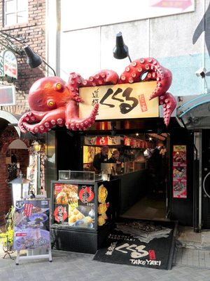

KUKURU TAKOYAKI (OSAKA, DOTONBORI)
One of the best places to try soft, delicious takoyaki filled with octopus.
MIZUNO OKONOMIYAKI (OSAKA, DOTONBORI)
Famous for savory Japanese pancakes loaded with toppings like pork, shrimp, and noodles.
NANIWAYA SOHONTEN (TOKYO)
Historic shop serving taiyaki (fish-shaped cake) with sweet red bean filling since 1909.
GINDACO (NATIONWIDE)
Popular chain for crispy, flavorful takoyaki, perfect as a snack or light meal.
KARAAGE YUKARI (TOKYO, AKIHABARA)
Juicy, flavorful Japanese fried chicken served hot and fresh at a small takeaway spot.